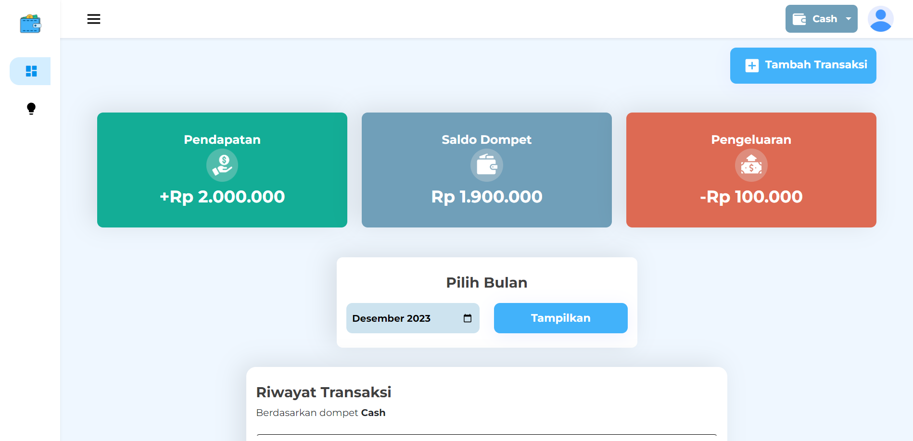
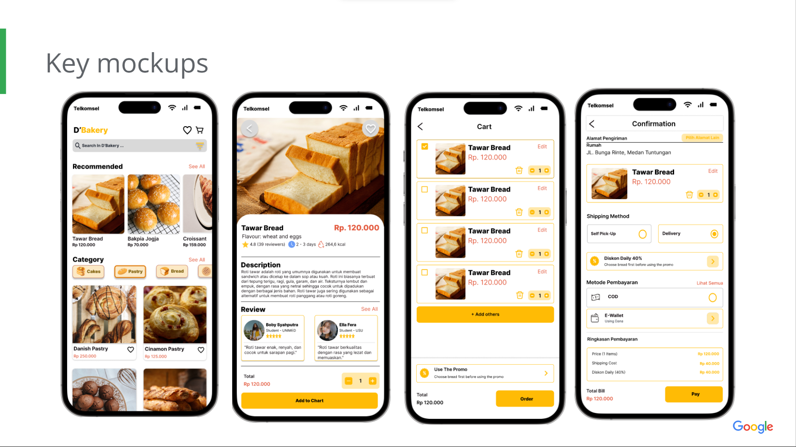
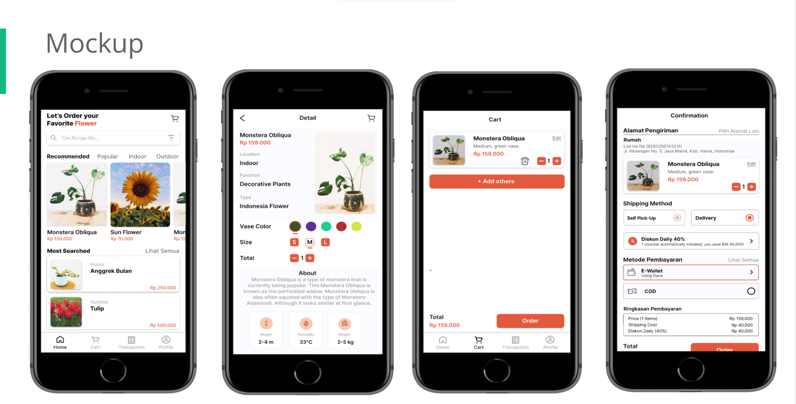

Irfando Aritonang
Web Developer
Summary
A Fresh graduate of Information System who has passionate in business and technology with excellences in working with others to achieve a certain objective on time.
I’m an energetic and ambitious person who has develop a mature and responsible approach to any task that I undertake or situation that I’m presented with.
I have expertise with creating websites with a mobile first approach and implementing Progressive Web Applications (PWA), implementing website accessibility.
Create android applications with kotlin programming, retrofit, create attractive applications, implement services, perform testing.
Education
- Bachelor of Information Systems, Informatics - University of Mikroskil (2019-2023)
- Rumbio Jaya 1 State High School, Science (2016-2019)
- Rumbio Jaya 3 State Junior High School, Science (2013-2016)
- Rumbio Jaya State 12 Elementary School (2007-2013)
Experience
UX Design Facilitator - Digital Talent Scholarsip
June 2023 - Agust 2023
- Supervising 1,274 UX Design study participants.
- Helping participants pass on time time, providing efficient study tips.
- As well as helping with technical matters obstacles in the learning process.
Frontend & Backend WEB Student - Dicoding Indonesia
Agust 2022 - December 2022
- One of 1.534 selected students from almost 6.764 interested applicants.
- Hardskills:
Making a website with a mobile first approach and implementing Progressive Web Apps (PWA), implementing website accessibility, applying Clean Code principles, conducting automated testing, building websites with good performance, building Web Services and RESTful APIs using Hapi framework, deploying web services through Amazon EC2, and testing RESTful API using Postman.
- Softskills:
Personality Productivity, Growth Mindset & Personal Development, Professional Ethics & Adaptability, Communication & Networking, Business Presentation, Personal Branding, and Interview Preparation.
Mobile Development - Bangkit Academy by Google
February 2022 - July 2022
- One of 3,100 selected students from almost 63,000 interested applicants.
- Hardskills:
Learn to build mobile applications using several libraries such as Android Jetpack, Material Design and Retrofit, create attractive applications, implement services, perform testing, and integrate applications with databases such as Room.
- Softskills:
Personality Productivity, Growth Mindset & Personal Development, Professional Ethics & Adaptability, Communication & Networking, Business Presentation, Personal Branding, and Interview Preparation.
Skills
- HTML, CSS, JavaScript
- NodeJS
- Bootstrap
- ReactJS
- SQL
- UI/UX Design
Awards & Certification
- Graduated Magna Cum Laude
- Google UX-Design
- Associate Android Developer
- Frontend Developer
Projects
Maneyfy Website

Demo: https://maneyfy.vercel.app/
Github: https://github.com/C22-017

Demo: https://www.figma.com/proto/LFchH7njnS82KgUBbg3PPd/Desain-D'Bakery-Sesungguhnya?node-id=55-36&scaling=scale-down&page-id=0%3A1&starting-point-node-id=55%3A36
Slide Deck: https://docs.google.com/presentation/d/1qIadCqFwbCSEPXYXxdZdbXvWzIxh7A_IF6cxHyqUr5Y/edit?usp=sharing
Flowers App Design Project

Demo: https://www.figma.com/proto/LFchH7njnS82KgUBbg3PPd/Desain-D'Bakery-Sesungguhnya?node-id=55-36&scaling=scale-down&page-id=0%3A1&starting-point-node-id=55%3A36
Slide Deck: https://docs.google.com/presentation/d/1G9uGp53il_X16iMhtQ6hLWEkR2qvHtZ1/edit?usp=sharing&ouid=107101908447511353248&rtpof=true&sd=true
My Hobbies
Contact Me